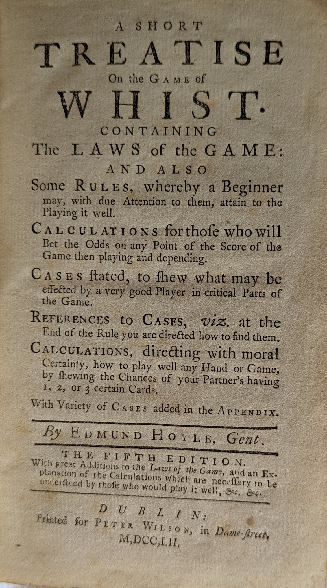
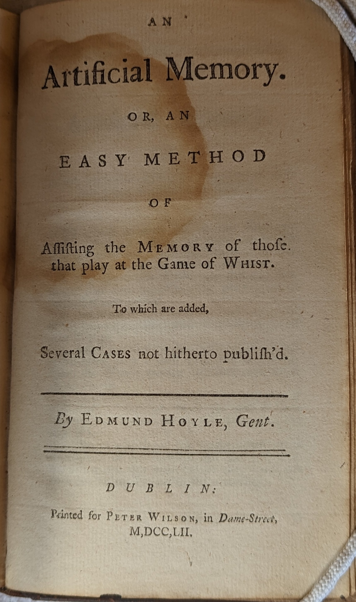

A Descriptive Bibliography of Edmond Hoyle
Copyright © 2014-26 by David Levy
(page updated 2026-06-01)User Guide
Whist.D.Wilson.1.1
A Short Treatise on the Game of Whist, printed for Peter Wilson, first Wilson edition, first issue, “fifth” edition, 1752.
 |
Title: | A SHORT | TREATISE | On the Game of | WHIST. | CONTAINING | The LAWS of the GAME: | AND ALSO | Some Rules, whereby a Beginner | may, with due Attention to them, attain to the | Playing it well. | Calculations for thoſe who will | Bet the Odds on any Point of the Score of the | Game then playing and depending. | Cases ſtated, to ſhew what may be | effected by a very good Player in Critical Parts of | the Game. | References to Cases, viz. at the | End of the Rule you are directed how to find them. | Calculations, directing with moral | Certainty, how to play well any Hand or Game, | by ſhewing the Chances of your Partner’s having | 1, 2, or 3 Certain Cards. | With variety of Cases added in the Appendix. | [rule] | By Edmund Hoyle, Gent. | [rule] | THE FIFTH EDITION. | With great Additions to the Laws of the Game, and an Ex-|planation of the Calculations which are neceſſary to be | underſtood by thoſe who would play it well, &c. &c. | [rule] | DUBLIN: | Printed for Peter Wilson, in Dame-ſtreet, | M,DCC,LII. |
| Collation: | 12o: A2 B–D6 E1, 2A4 [$½ signed]; 25 leaves, pp. [4 ] [1] 2–38, 2[1–3] 4–8 |
| Section Title Memory |  |
AN | Artificial Memory. | OR, AN | EASY METHOD | OF | Aſſiſting the Memory of thoſe | that play at the Game of Whist. | To which are added, | Several Cases not hitherto publiſh'd. | [rule] | By Edmund Hoyle, Gent. | [double rule] | DUBLIN: | Printed for Peter Wilson, in Dame-Street, | M,DCC,LII. |
| Contents: | Signature (Page) Reference | Contents | Signature (Page) Reference | Running Titles |
| A1r | title | |||
| A1v | blank | |||
| A2r–A2v | ‘[double rule] | The | CONTENTS. | [...]’ | A2v | ‘The CONTENTS.’ | |
| B1r–E1v (1–38) | ‘[double rule] | A SHORT | TREATISE | On the Game of | WHIST. | [...]’ | |||
| 2A1r (21) | section title memory | |||
| 2A1v (22) | blank | |||
| 2A2r–A4v (23–8) | ‘[double rule] | AN | Artificial Memory. | OR, | An eaſy Method of aſſiſting the Memory of thoſe | that play at the Game of WHIST. | [...]’ |
| Publisher: | Peter Wilson |
| Notices: | 1752-02-17 Dublin Edsall News Letter: “This day is published, by Peter Wilson, opposite the old Horse Guard, in Dame-Street, [Price a British Shilling,] The Polite Gamester: containing short treatises on the games of whist quadrille, back-gammon, piquet and chess; together with an artificial memory; or, an easy method of assisting the memory of those that play at the game of whist; By Edmund Hoyle, Gent.--Note, his treatise on the game of whist with his artificial memory, may be had stitched together. Price 4d.” |
| Price: | 4d. (advertisement) |
| Copies Seen in Collections: | Copisarow (see Wilson.A); Levy [1770] (see Wilson.A) |
| Notes: | This is the first of two issues of Wilson's Whist. Whist.D.Wilson.1.2 is distinguished by the inserted F gathering. From the advertisement it appears that the two treatises, Whist and Memory were sold as a single volume. No copies of the first issue survive, except as included in Wilson.A. |